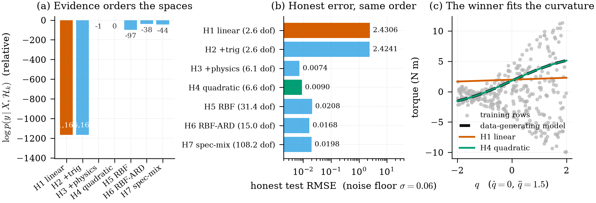

在候选函数空间中搜索「谁生成了数据」
一个 300 行、60 秒跑完的最小实验：边际似然能不能认出真值所在的空间？
实验设定 · Setup
数据是一个「玩具逆动力学」：输入 \(x=(q,\dot q,\ddot q)\) 均匀采样， 真值故意选成物理先验里最常见的三项——惯性、科里奥利式交叉项、重力：
\[ f(x) = \underbrace{1.2\,\ddot q}_{\text{inertia}} + \underbrace{0.9\,q\,\ddot q}_{\text{Coriolis-like}} + \underbrace{0.7\,\sin q}_{\text{gravity}} + \underbrace{0.25\,\dot q}_{\text{damping}}, \qquad y = f(x) + \varepsilon,\ \ \varepsilon\sim\mathcal N(0,0.06^2) \]
\(320\) 行训练、\(2000\) 行重新采样的测试（不是同一轨迹的切分，因此没有 SARCOS 那种泄露问题）。
七个候选空间，前四个是显式基（\(\phi\) 给定后核就是 \(k(x,x')=\phi(x)^\top\mathrm{diag}(\theta)\phi(x')\)）， 后三个是「无限维」的核：
| 空间 | 基 / 核 | 物理读法 |
|---|---|---|
| \(\mathcal{H}_1\) linear | \(1,q,\dot q,\ddot q\) | 纯惯性 + 阻尼 |
| \(\mathcal{H}_2\) +trig | \(\mathcal{H}_1\cup\{\sin q,\cos q\}\) | 加上重力的周期成分 |
| \(\mathcal{H}_3\) +physics | \(\mathcal{H}_2\cup\{q\ddot q,\,q\dot q,\,\dot q\ddot q\}\) | 包含真值的最小空间 |
| \(\mathcal{H}_4\) quadratic | \(\mathcal{H}_2\cup\) 全部二阶单项式 | 不挑物理，全都要 |
| \(\mathcal{H}_5\) RBF | 各向同性高斯核 | 光滑、非参数 |
| \(\mathcal{H}_6\) RBF-ARD | 每个输入一个长度尺度 | 各向异性光滑 |
| \(\mathcal{H}_7\) spec-mix | \(Q=2\) 谱混合核 (Wilson 和 Adams 2013) | 自动找频率结构 |
每个空间各自最大化 log 边际似然（多起点 L-BFGS-B），然后三把尺子一起量： \(\log p(y\mid X,\mathcal{H}_k)\)、闭式 GP 留一误差、以及诚实测试集 RMSE； 另记一个有效自由度 \(\operatorname{tr}(K_y^{-1}K)\)。
结果 · Results

| 空间 | \(\log p(y\mid X,\mathcal H_k)\) | LOO RMSE | 测试 RMSE | 有效自由度 |
|---|---|---|---|---|
| \(\mathcal{H}_1\) linear | −738.42 | 2.4151 | 2.4306 | 2.6 |
| \(\mathcal{H}_2\) +trig | −738.04 | 2.4103 | 2.4241 | 2.6 |
| \(\mathcal{H}_3\) +physics | +426.38 | 0.0597 | 0.0046 | 4.8 |
| \(\mathcal{H}_4\) quadratic | +413.34 | 0.0597 | 0.0099 | 9.2 |
| \(\mathcal{H}_5\) RBF | +330.07 | 0.0626 | 0.0210 | 32.5 |
| \(\mathcal{H}_6\) RBF-ARD | +390.19 | 0.0601 | 0.0161 | 15.2 |
| \(\mathcal{H}_7\) spec-mix | +385.23 | 0.0607 | 0.0182 | 57.1 |
三件事值得注意：
- 证据排序 = 诚实误差排序。 边际似然选出的 \(\mathcal{H}_3\) 同时也是测试误差最低、 自由度最小的空间——它没有「奖励复杂模型」，恰恰相反：\(\mathcal{H}_4\) 多出的 4.4 个自由度 换来了 2 倍误差，于是被奥卡姆因子扣了 13 个 nat。
- 缺项不是靠数据能补回来的。 \(\mathcal{H}_1,\mathcal{H}_2\) 的测试误差停在 \(2.4\)， 与噪声水平 \(0.06\) 差了 40 倍：没有 \(q\ddot q\) 这个基函数，再多数据也只能拟合出「平均意义下的直线」。
- LOO 有噪声地板。 闭式 LOO 是预测含噪观测的误差，所以它停在 \(\sigma=0.06\) 附近； 而测试 RMSE 比的是均值函数与真值，能低到 \(0.0046\)。两者都单调，但别把它们当成同一个量。
代码骨架 · Code
核心只有三个函数：核、负 log 边际似然、以及由 \(K_y^{-1}\) 直接给出的闭式 LOO。
def gram(kind, a, b, theta, space):
if kind == "basis": # 显式基 + 每个基一个尺度（特征级 ARD）
phi = SPACES[space][1](a) * theta
psi = SPACES[space][1](b) * theta
return phi @ psi.T
tau = a[:, None, :] - b[None, :, :]
if kind == "rbf": # 一个共享长度尺度
return theta[1] ** 2 * np.exp(-0.5 * ((tau / theta[0]) ** 2).sum(-1))
if kind == "ard": # 每个输入一个长度尺度
return theta[-1] ** 2 * np.exp(-0.5 * ((tau / theta[:-1]) ** 2).sum(-1))
if kind == "sm": # 谱混合核，Q = 2 [@wilson2013sm]
w, mu, v = theta[:2], theta[2:8].reshape(2, 3), theta[8:14].reshape(2, 3)
k = np.zeros(tau.shape[:2])
for j in range(2):
quad = (tau ** 2) @ v[j]
k += w[j] ** 2 * np.exp(-2 * np.pi ** 2 * quad) * np.cos(2 * np.pi * (tau @ mu[j]))
return k
def neg_logml(params, X, y, kind, space):
theta, noise = np.exp(params[:-1]), np.exp(params[-1])
K = gram(kind, X, X, theta, space) + (noise ** 2 + 1e-8) * np.eye(len(X))
L = np.linalg.cholesky(K)
alpha = np.linalg.solve(L.T, np.linalg.solve(L, y))
return 0.5 * y @ alpha + np.log(np.diag(L)).sum() + 0.5 * len(y) * np.log(2 * np.pi)
def loo_rmse(X, y, kind, space, theta, noise):
"""闭式 GP 留一：e_i = [K_inv y]_i / [K_inv]_ii。"""
K_y = gram(kind, X, X, theta, space) + (noise ** 2 + 1e-9) * np.eye(len(X))
K_inv = np.linalg.inv(K_y)
return np.sqrt(np.mean(((K_inv @ y) / np.diag(K_inv)) ** 2))- 真值 \(\mathcal{H}_3\) 被写进了候选表，所以这是一个「识别」实验，不是「发现」实验。 真正的难题（把基函数本身也参数化、在超空间里搜索）见 泛函空间 → 奇异值谱 第 7–10 问。
- 输入是 3 维、样本 320：精确 GP 的 \(O(n^3)\) 还无所谓，SARCOS 的 44 484 行就必须换 SVGP。
- 谱混合核只用了 \(Q=2\) 且没有做频率初始化，\(\mathcal{H}_7\) 的 57 个有效自由度里有一部分是「没学好」而不是「结构需要」。